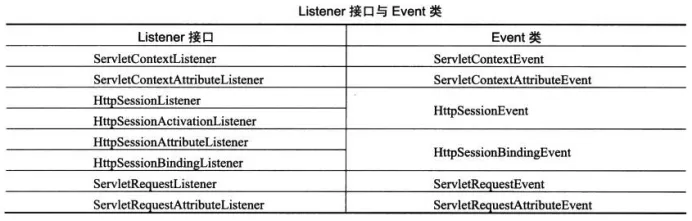
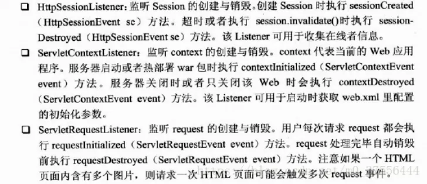
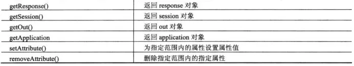
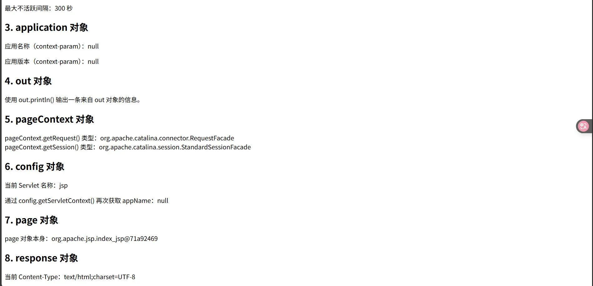
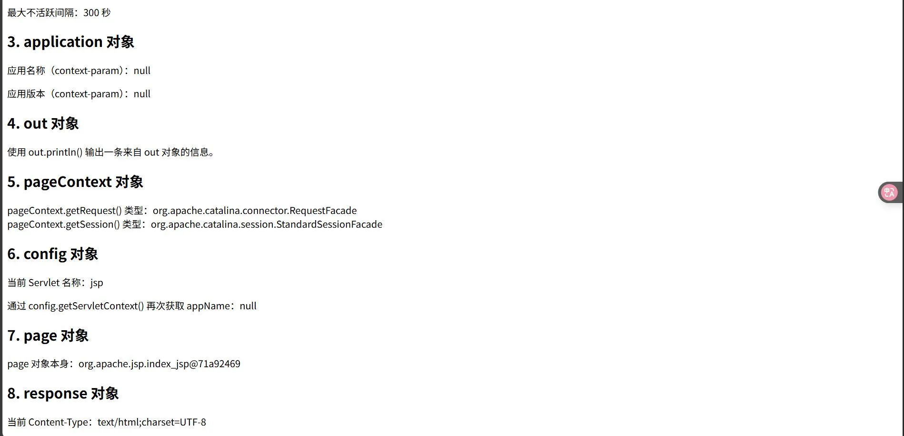
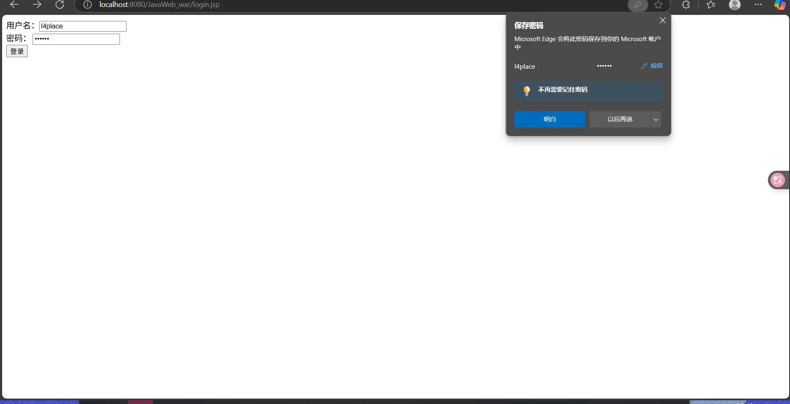
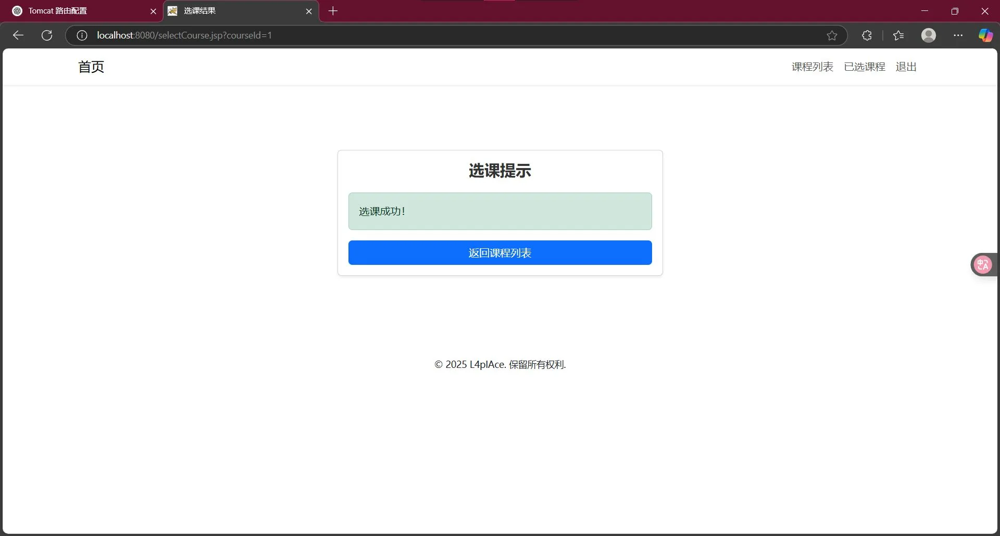
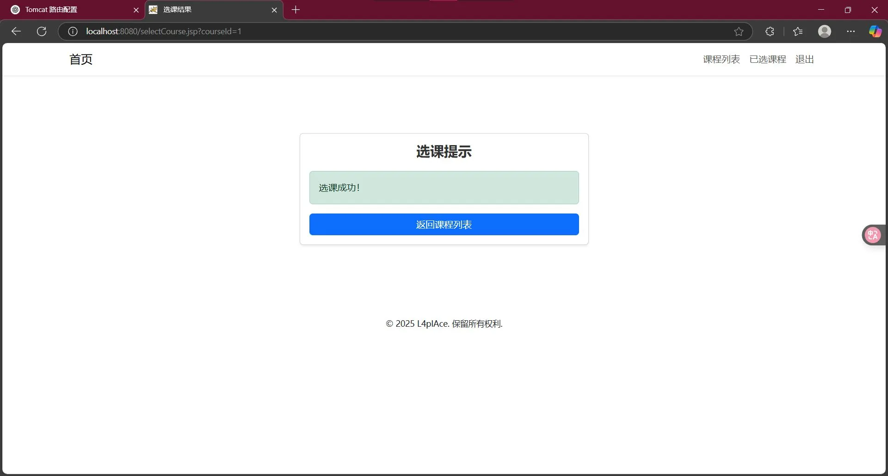
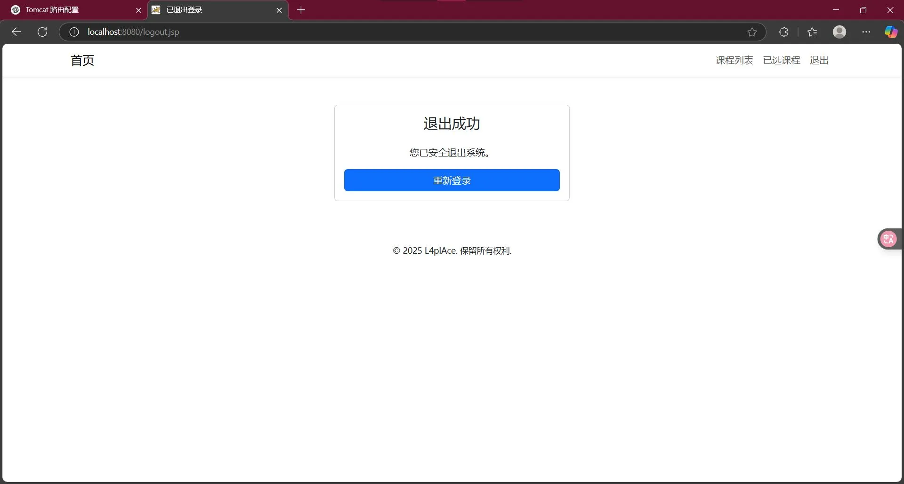
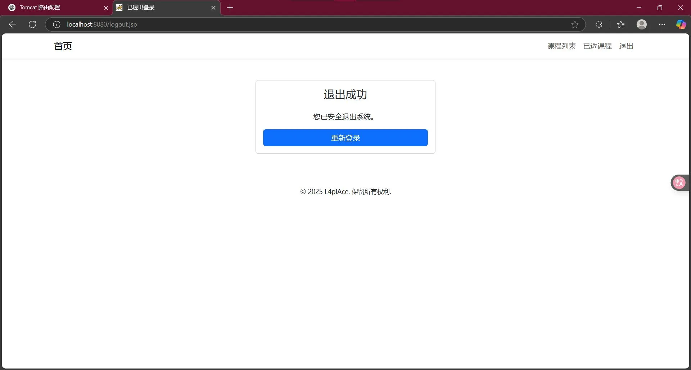

1. 实验一：什么是Servlet
什么是Servlet
Servlet（Server Applet）是运行在服务端的Java应用程序， Servlet对象主要封装了对HTTP请求的处理，它的运行需要Servlet容器的支持。Servlet可以实现用Java语言来编写业务逻辑处理HTTP请求。
Servlet的实现
Servlet是Java语言实现的一个接口，用户编写的 Servlet 程序都必须实现 javax.servlet.Servlet 接口，该接口是 ServletAPI 的核心，在这个接口中有 5 个方法必须实现。 ⑴ init()方法
⑵ service()方法
⑶ destroy()方法
⑷ getServletConfig()方法
⑸ getServletInfo()方法
实 际 上 ， Servlet 为 用 户 提 供 了 两 个 更 适 用 于 编 程 的 抽 象 类javax.servlet.GenericServlet 和 javax.servlet. http. HttpServlet，这两个抽象类间接实现了 Servlet 接口。其中，GenericServlet 抽象类实现了 Servlet 接口中除了 service()方法以外的其他所有方法；HttpServlet 抽象类则是针对 http 协议而定义的，是 GenericServlet 类的子类，它仅支持基于 http 协议的请求或响应。
截图


代码
package com.l4p;
import javax.servlet.http.HttpServlet;
import javax.servlet.http.HttpServletRequest;
import javax.servlet.http.HttpServletResponse;
import java.io.IOException;
import java.io.PrintWriter;
/**
* 一个结合 HttpServletRequest 和 HttpServletResponse 的示例
*/
public class MySimpleHttpServlet extends HttpServlet {
@Override
protected void doGet(HttpServletRequest req, HttpServletResponse resp) throws IOException {
// 设置响应类型和编码
resp.setContentType("text/html;charset=UTF-8");
// 获取请求参数
String name = req.getParameter("name"); // 比如浏览器传 ?name=Tom
// 获取输出流
PrintWriter out = resp.getWriter();
out.println("<html><body>");
// 判断是否有传参数
if (name != null && !name.isEmpty()) {
out.println("<h2>Hello, " + name + "!</h2>");
} else {
out.println("<h2>Hello from MySimpleHttpServlet!</h2>");
}
out.println("</body></html>");
}
@Override
protected void doPost(HttpServletRequest req, HttpServletResponse resp) throws IOException {
// 设置响应类型和编码
resp.setContentType("text/html;charset=UTF-8");
// 获取请求参数
String username = req.getParameter("username");
String password = req.getParameter("password");
// 获取输出流
PrintWriter out = resp.getWriter();
out.println("<html><body>");
if (username != null && password != null) {
out.println("<h2>Received POST data</h2>");
out.println("<p>Username: " + username + "</p>");
out.println("<p>Password: " + password + "</p>");
} else {
out.println("<h2>No POST data received</h2>");
}
out.println("</body></html>");
}
}
package com.l4p;
import javax.servlet.*;
import java.io.IOException;
import java.io.PrintWriter;
public class SimpleServlet implements Servlet {
private ServletConfig config; // 用于存储Servlet的配置信息
/**
* Servlet初始化方法，只调用一次
*/
@Override
public void init(ServletConfig config) throws ServletException {
this.config = config;
System.out.println("[init] Servlet 初始化完成");
}
/**
* 返回Servlet配置信息
*/
@Override
public ServletConfig getServletConfig() {
return config;
}
/**
* 处理请求的核心方法，每次请求都会调用
*/
@Override
public void service(ServletRequest req, ServletResponse res) throws ServletException, IOException {
System.out.println("[service] 开始处理请求");
// 设置响应格式
res.setContentType("text/html;charset=UTF-8");
// 获取输出流，向客户端输出内容
PrintWriter out = res.getWriter();
out.println("<html><body>");
out.println("<h2>Hello from MyFullServlet!</h2>");
// 访问初始化参数
String myParam = config.getInitParameter("myParam");
out.println("<p>初始化参数 myParam = " + myParam + "</p>");
// 访问ServletContext全局对象
ServletContext context = config.getServletContext();
out.println("<p>应用上下文路径：" + context.getContextPath() + "</p>");
out.println("</body></html>");
}
/**
* 返回Servlet的描述信息
*/
@Override
public String getServletInfo() {
return "MyFullServlet - 完整手动实现Servlet接口的示例";
}
/**
* 销毁Servlet，只在Servlet被卸载或服务器关闭时调用
*/
@Override
public void destroy() {
System.out.println("[destroy] Servlet 被销毁");
}
}
2. 实验二：Session与Cookie
Cookie 对象
cookie用于存储用户信息，由服务器生成并发送给浏览器，浏览器将cookie以key/value的形式保存到客户机的某个文件夹中。
将一个cookie对象发送到客户端，使用response对象的addCookie()方法；
javaWeb 四大域对象
(1) 页面域对象 (PageContext)
Page的作用范围为当前页有效，只能用于jsp页面中,是四个域对象中作用范围最小的的一个域对象。
(2) 请求域对象 (HttpServletRequest)
客户端每发送一次HTTP 请求会创建一个请求Request对象。Request的作用范围只存在当前发送的请求过程中，服务器返回响应后，生命周期结束。
(3) 会话域对象 (HttpSession)
客户端第一次访问 Web时创建一个Session对象，Session的作用范围是在用户打开游览器访问WEB的期间，览器被关闭，生命周期结束。
(4) 应用程序域对象 (ServletContext)
ServletContext是最大的Web域对象，在整个工程内有效，可以存储一些需要全局部署的配置文件，也可以存储其他信息，不过因为它的生命周期最长，是随着服务器的开启而开启，随着服务器的关闭而销毁，或者项目从服务器中移除工程而销毁。所以ServletContext中存储数据，会一直储存在内存中，少用这个对象会比较节省内存。
页面转发和重定向
（1） 转发可以携带当前的ServletRequest的信息，传递到下一个页面，而重定向是重新开启一次访问，不能携带。
（2） 转发上面的地址栏不会发生改变就访问了别的内容，重定向会发生改变。
（3） 转发只能存在于服务器内部，重定向可以访问任何其他的网页。
Session与Cookie的比较
（1） cookie是存于浏览器端，而session是存于服务器端。
（2） cookie有数量和大小限制，而session没有，可以无限创建。
（3） Session和Cookie都有时效，可以对有效期进行设置。
截图


代码
package com.l4p;
import javax.servlet.ServletException;
import javax.servlet.annotation.WebServlet;
import javax.servlet.http.*;
import javax.servlet.ServletContext;
import java.io.IOException;
@WebServlet("/login")
public class LoginServlet extends HttpServlet {
@Override
protected void doPost(HttpServletRequest request, HttpServletResponse response) throws ServletException, IOException {
// 1. 获取客户端提交的数据
String username = request.getParameter("username");
String password = request.getParameter("password");
// 2. 简单验证（实际开发中应连接数据库）
if ("admin".equals(username) && "123456".equals(password)) {
// 登录成功处理
// 创建 Cookie 保存用户信息
Cookie cookie = new Cookie("username", username);
cookie.setMaxAge(60 * 60); // 1小时有效
response.addCookie(cookie);
// 使用 Session 保存用户登录状态
HttpSession session = request.getSession();
session.setAttribute("user", username);
// 使用应用域（ServletContext）统计登录人数
ServletContext application = getServletContext();
Integer loginCount = (Integer) application.getAttribute("loginCount");
if (loginCount == null) {
loginCount = 1;
} else {
loginCount = loginCount + 1;
}
application.setAttribute("loginCount", loginCount);
// 请求域（Request）保存提示信息
request.setAttribute("msg", "登录成功，欢迎您：" + username);
// 页面转发到 welcome.jsp request.getRequestDispatcher("/welcome.jsp").forward(request, response);
} else {
// 登录失败处理
// 请求域保存错误提示
request.setAttribute("msg", "用户名或密码错误，请重新登录！");
// 页面转发回登录页
request.getRequestDispatcher("/login.jsp").forward(request, response);
}
}
@Override
protected void doGet(HttpServletRequest request, HttpServletResponse response) throws ServletException, IOException {
// 直接重定向到登录页面
response.sendRedirect(request.getContextPath() + "/login.jsp");
}
}
3. 实验三：Servlet过滤器
Servlet过滤器（Filter）
Servlet过滤器是从Servlet2.3规范开始新增的功能，并在Servlet2.4规范中得到增强。过滤器具有拦截客户端（浏览器）请求的功能，Servlet过滤器用于拦截客户端（浏览器）与目标资源的请求，并对这些请求进行一定过滤处理再发送给目标资源。
过滤器对象放置在javax.servlet包中，其名称为Filter，是一个接口。除了这个接口，与过滤器相关的两个接口对象：FilterConfig（一个包含Filter配置和运行环境信息的对象）和FilterChain（当前Filter链的对象）。

FilterChain接口只有一个方法doFilter(),该方法用于将过滤后的请求传给下一个过滤器，如果此过滤器已是过滤器链中的最后一个过滤器，那么请求将传送给目标资源。
过滤器的创建与配置
(1)创建一个Java类，实现javax.servlet.Filter接口，并实现doFilter()方法。
(2) 在web.xml文件中声明该过滤器并指定URL模式。
过滤器的实际应用：
（1）用户认证和授权管理。
（2）统计web应用的访问量和访问命中率，生成访问报告。
（3）实现web应用的日志处理功能。
（4）实现数据压缩功能。
（5）对传输的数据进行加密。
Servlet监听器（Listener）接口
Servlet监听器用于监听WEB容器的有效事件，并做出相应的处理。例如，在Web应用程序启动和关闭时执行一些任务（如连接和释放数据库），或者监控Session的创建和销毁等。Servlet中的8个监听接口和6个Event类如下表：

HttpSessionLister、ServletContextListener、ServletRequestListener三种监听器的触发时机及使用：


HttpSessionBindingListener和HttpSessionActivationListener监听Session 内的对象。

创建和配置监听器
public class MyContextListener implements ServletContextListener {
}
public class MyRequestListener implements ServletRequestListener {
}
public class MySessionListener implements HttpSessionListener,
HttpSessionAttributeListener {
}
web.xml
<listener>
<listener-class>servlet.listener.MySessionListener </listener-class>
</listener>
截图


代码
package com.l4p;
import javax.servlet.*;
import java.io.IOException;
import java.util.Date;
public class LogFilter implements Filter {
@Override
public void init(FilterConfig filterConfig) throws ServletException {
System.out.println("LogFilter 初始化完成");
}
@Override
public void doFilter(ServletRequest request, ServletResponse response, FilterChain chain)
throws IOException, ServletException {
System.out.println("请求到达时间：" + new Date());
// 继续调用下一个过滤器或者目标资源
chain.doFilter(request, response);
System.out.println("响应返回时间：" + new Date());
}
@Override
public void destroy() {
System.out.println("LogFilter 被销毁");
}
}
package com.l4p;
import javax.servlet.http.HttpSessionEvent;
import javax.servlet.http.HttpSessionListener;
public class OnlineCountListener implements HttpSessionListener {
// 在线人数（注意：实际项目中应该考虑并发安全，这里为了示例简单化）
private static int onlineCount = 0;
@Override
public void sessionCreated(HttpSessionEvent se) {
onlineCount++;
System.out.println("[监听器] 新会话创建，当前在线人数：" + onlineCount);
}
@Override
public void sessionDestroyed(HttpSessionEvent se) {
onlineCount--;
System.out.println("[监听器] 会话销毁，当前在线人数：" + onlineCount);
}
// 提供一个公共方法，供其他地方调用
public static int getOnlineCount() {
return onlineCount;
}
}
4. 实验四：JSP
JSP页面可包含内容：
指令标识，HTML代码，JavaScript代码，嵌入的Java代码，JSP动作标识，注释等。
JSP指令标识
（1） page指令：<%@page ……>，是JSP最常用的指令，用于定义整个JSP页面相关的属性，这些属性在JSP被服务器解释成Servlet时会转换为相应的Java程序代码。
（2） include指令：<%@include ……>，该指令可以在一个JSP页面中包含另一个JSP页面。
（3） taglib指令：<%@taglib ……>，JSP页面中可以通过taglib指令标识声明该页面中所使用的标签库。
JSP脚本标识
（1） JSP表达式：<%= 表达式%>，用于向页面输出表达式的值。
（2） 声明标识：<=! 声明变量或方法的代码%>，用于在JSP页面中声明全局的变量或方法被整个JSP页面访问。
（3） 代码片段：<%Java代码%>，在JSP页面中嵌入Java代码。
JSP动作标识
（1） 包含文件标识：<jsp: include ……>，用于向当前页面中包含其他文件，包含的文件可以是动态文件也可以是静态文件。
（2） 请求转发标识：<jsp: forward ……>，用于将请求转发到其他资源，如另一个JSP页面，HTML页面，Servlet等。
（3） 传递参数标识：<jsp: param ……>，可以作为其他标识的子标识，用于为其他标识传递参数。
截图


代码
<%@ page language="java" contentType="text/html; charset=UTF-8" pageEncoding="UTF-8" %>
<%@ include file="header.jsp" %>
<!DOCTYPE html>
<html lang="zh">
<head>
<meta charset="UTF-8">
<title>JSP 示例</title>
<script type="text/javascript">
function showMessage() {
alert('欢迎访问 JSP 页面！');
}
</script>
</head>
<body>
<h1>欢迎来到无 JSTL 的 JSP 页面</h1>
<!-- 输出当前时间 -->
<p>当前时间：<%= new java.util.Date() %></p>
<!-- 在脚本片段中定义并设置属性 -->
<%
String message = "这是一个纯 JSP 动态页面示例";
request.setAttribute("message", message);
%>
<!-- 通过表达式输出 -->
<p>脚本定义的 message 变量：<%= message %></p>
<!-- JSP 声明：全局方法 -->
<%!
public String getGreeting() {
return "你好，欢迎使用标准 JSP！";
}%>
<!-- 调用声明的方法 -->
<p>调用声明方法返回：<%= getGreeting() %></p>
<!-- JSP 动作：包含 footer.jsp --><jsp:include page="footer.jsp" />
<!-- JSP 动作：请求转发，并传递参数 -->
<%--<jsp:forward page="anotherPage.jsp">--%>
<%-- <jsp:param name="user" value="john" />--%>
<%--</jsp:forward>--%>
<button onclick="showMessage()">点击显示消息</button>
</body>
</html>
<%@ page language="java" contentType="text/html; charset=UTF-8" pageEncoding="UTF-8" %>
<!-- header.jsp -->
<header style="background-color: #eef; padding: 10px 20px;">
<h2>我的网站</h2>
<nav> <a href="index.jsp">首页</a> |
<a href="products.jsp">产品</a> |
<a href="contact.jsp">联系我们</a>
</nav></header>
<hr/>
<%@ page language="java" contentType="text/html; charset=UTF-8" pageEncoding="UTF-8" %>
<!-- footer.jsp -->
<hr/>
<footer style="background-color: #eef; padding: 10px 20px; text-align: center;">
<p>© 2025 我的公司 版权所有</p>
<p>电话：400-123-4567 | 邮箱：info@mycompany.com</p>
</footer>
5. 实验五：JSP内置对象
JSP的9个内置对象：
request，response，session，application，out，pageContext，config，page，exception。
（1） request对象
获得用户请求的方式： request.getMethod()
获得发送请求的用户端的地址： request.getRequestURI()
获得请求使用的协议： request.getProtocol()
获得请求的页面文件的路径： request.getServletPath()
获得服务器名称： request.getServerName()
获得服务器的端口号： request.getServerPort()
获得客户端的 IP 地址： request.getRemoteAddr()
获得客户端的主机名： request.getRemoteHost()
（2） session对象
获取客户端最后一次会话的请求时间：session.getLastAccessedTime()
获取请求会话的有效时间：session.getMaxInactiveInterval()
以秒为单位设置session的有效时间：session.setMaxInactiveInterval()
（3） application对象用于保存所有应用的公有数据，它在服务器启动时自动创建，只有在服务器停止时才销毁。所有用户可共享application对象，类似于系统的全局变量。
application对象提供了对初始化参数的访问方法，初始化参数在web.xml文件中进行设置：
<context-param>
<param-name> </param-name>
<param-value> </param-value>
</context-param>
application.getInitParameter()方法获取web.xml文件中配置的参数
（4） out对象，向客户端浏览器输出信息，并且管理应用服务器上的输出缓冲区。
（5） pageContext对象，通过它可以获取JSP面面的request、response、session、application、exception等对象。


截图

 



代码
<%@ page language="java"
contentType="text/html; charset=UTF-8"
pageEncoding="UTF-8"
errorPage="error.jsp" %>
<%@ page import="java.util.Date" %>
<%
// —— response 对象示例 ——// 设置一个自定义响应头
response.setHeader("X-Demo", "ImplicitObjects");
// —— session 对象示例 ——// 将 session 有效期设置为 5 分钟（300 秒）
session.setMaxInactiveInterval(300);
%>
<!DOCTYPE html>
<html lang="zh">
<head>
<meta charset="UTF-8">
<title>JSP 隐式对象演示</title>
</head>
<body>
<h2>1. request 对象</h2>
<ul>
<li>HTTP 方法：<%= request.getMethod() %></li>
<li>请求 URI：<%= request.getRequestURI() %></li>
<li>协议：<%= request.getProtocol() %></li>
<li>Servlet 路径：<%= request.getServletPath() %></li>
<li>服务器名称：<%= request.getServerName() %></li>
<li>服务器端口：<%= request.getServerPort() %></li>
<li>客户端 IP：<%= request.getRemoteAddr() %></li>
<li>客户端主机名：<%= request.getRemoteHost() %></li>
</ul>
<h2>2. session 对象</h2>
<p>上次访问时间：<%= new Date(session.getLastAccessedTime()) %></p>
<p>最大不活跃间隔：<%= session.getMaxInactiveInterval() %> 秒</p>
<h2>3. application 对象</h2>
<p>应用名称（context-param）：<%= application.getInitParameter("appName") %></p>
<p>应用版本（context-param）：<%= application.getInitParameter("appVersion") %></p>
<h2>4. out 对象</h2>
<%
out.println("使用 out.println() 输出一条来自 out 对象的信息。");
%>
<h2>5. pageContext 对象</h2>
<%
// 通过 pageContext 获取 request 和 session Object req = pageContext.getRequest();
Object sess = pageContext.getSession(); out.println("pageContext.getRequest() 类型：" + req.getClass().getName());
out.println("<br/>pageContext.getSession() 类型：" + sess.getClass().getName());
%>
<h2>6. config 对象</h2>
<p>当前 Servlet 名称：<%= config.getServletName() %></p>
<p>通过 config.getServletContext() 再次获取 appName：<%=
config.getServletContext().getInitParameter("appName") %></p>
<h2>7. page 对象</h2>
<p>page 对象本身：<%= page.toString() %></p>
<h2>8. response 对象</h2>
<p>当前 Content-Type：<%= response.getContentType() %></p>
<h2>9. 异常触发测试（会跳转到 error.jsp）</h2>
<%
// 故意制造一个除零异常，测试 exception 对象
int x = 1 / 0;
%>
</body>
</html>
<%@ page isErrorPage="true"
language="java"
contentType="text/html; charset=UTF-8"
pageEncoding="UTF-8" %>
<!DOCTYPE html>
<html lang="zh">
<head>
<meta charset="UTF-8">
<title>发生错误</title>
</head>
<body>
<h1>系统错误</h1>
<p>异常类型：<%= exception.getClass().getName() %></p>
<p>异常信息：<%= exception.getMessage() %></p>
<hr/>
<p><a href="index.jsp">返回首页</a></p>
</body>
</html>
6. 实验六：JSP表达式语言EL和JSP标准标签库（JSTL）
一、EL表达式
表达式语言（Expression Language，EL）,EL表达式是用"${}“括起来的脚本，用来更方便的读取对象！EL表达式主要用来读取数据，进行内容的显示！
EL表达式主要是来对内容的显示，为了显示的方便，EL表达式提供了11个内置对象：
1. pageContext 对应于JSP页面中的pageContext对象（注意：取的是pageContext对象）
2. pageScope 代表page域中用于保存属性的Map对象
3. requestScope 代表request域中用于保存属性的Map对象
4. sessionScope 代表session域中用于保存属性的Map对象
5. applicationScope 代表application域中用于保存属性的Map对象
6. param 表示一个保存了所有请求参数的Map对象
7. paramValues表示一个保存了所有请求参数的Map对象，它对于某个请求参数，返回的是一个string[]
8. header 表示一个保存了所有http请求头字段的Map对象
9. headerValues同上，返回string[]数组
10. cookie 表示一个保存了所有cookie的Map对象
11. initParam 表示一个保存了所有web应用初始化参数的map对象
EL表达式支持简单的运算符：加减乘除取摸，逻辑运算符，三目运算符。empty运算符（判断是否为null)
二、JSTL标签
JSP标准标签库（JSTL）是一个JSP标签集合，它封装了JSP应用的通用核心功能。JSTL支持通用的、结构化的任务，比如迭代，条件判断，XML文档操作，国际化标签，SQL标签。 除了这些，它还提供了一个框架来使用集成JSTL的自定义标签。
根据JSTL标签所提供的功能，可以将其分为5个类别：核心标签、格式化标签、SQL 标签、XML 标签、JSTL 函数。
1、JSTL 库安装
Apache Tomcat安装JSTL库步骤如下：
（1） 从Apache的标准标签库中下载的二进包(jakarta-taglibs-standard-current.zip)。官方下载地址：http://archive.apache.org/dist/jakarta/taglibs/standard/binaries/
（2） 下载akarta-taglibs-standard-1.1.2.zip 包并解压，将 jakarta-taglibs-standard-1.1.2/lib/ 下的两个 jar 文件：standard.jar 和 jstl.jar 文件拷贝到 /WEB-INF/lib/ 下。
（3） 将 tld 下的需要引入的 tld 文件复制到 WEB-INF 目录下。
（4） 配置web.xml 文件如下：
<?xml version="1.0" encoding="UTF-8"?>
<web-app version="2.4"
xmlns="http://java.sun.com/xml/ns/j2ee"
xmlns:xsi="http://www.w3.org/2001/XMLSchema-instance"
xsi:schemaLocation="http://java.sun.com/xml/ns/j2ee
http://java.sun.com/xml/ns/j2ee/web-app_2_4.xsd">
<jsp-config>
<taglib>
<taglib-uri>http://java.sun.com/jsp/jstl/fmt</taglib-uri>
<taglib-location>/WEB-INF/fmt.tld</taglib-location>
</taglib>
<taglib>
<taglib-uri>http://java.sun.com/jsp/jstl/fmt-rt</taglib-uri>
<taglib-location>/WEB-INF/fmt-rt.tld</taglib-location>
</taglib>
<taglib>
<taglib-uri>http://java.sun.com/jsp/jstl/core</taglib-uri>
<taglib-location>/WEB-INF/c.tld</taglib-location>
</taglib>
<taglib>
<taglib-uri>http://java.sun.com/jsp/jstl/core-rt</taglib-uri>
<taglib-location>/WEB-INF/c-rt.tld</taglib-location>
</taglib>
<taglib>
<taglib-uri>http://java.sun.com/jsp/jstl/sql</taglib-uri>
<taglib-location>/WEB-INF/sql.tld</taglib-location>
</taglib>
<taglib>
<taglib-uri>http://java.sun.com/jsp/jstl/sql-rt</taglib-uri>
<taglib-location>/WEB-INF/sql-rt.tld</taglib-location>
</taglib>
<taglib>
<taglib-uri>http://java.sun.com/jsp/jstl/x</taglib-uri>
<taglib-location>/WEB-INF/x.tld</taglib-location>
</taglib>
<taglib>
<taglib-uri>http://java.sun.com/jsp/jstl/x-rt</taglib-uri>
<taglib-location>/WEB-INF/x-rt.tld</taglib-location>
</taglib>
</jsp-config>
</web-app>
（5） 在每个 JSP 文件中的头部包含 <taglib> 标签：
<%@ taglib prefix="c" uri="http://java.sun.com/jsp/jstl/core" %>
2、核心标签是最常用的 JSTL标签。引用核心标签库的语法如下：
| 标签 | 描述 |
| <c:out> | 用于在JSP中显示数据，就像<%= … > |
| <c:set> | 用于保存数据 |
| <c:remove> | 用于删除数据 |
| <c:catch> | 用来处理产生错误的异常状况，并且将错误信息储存起来 |
| <c:if> | 与我们在一般程序中用的if一样 |
| <c:choose> | 本身只当做<c:when>和<c:otherwise>的父标签 |
| <c:when> | <c:choose>的子标签，用来判断条件是否成立 |
| <c:otherwise> | <c:choose>的子标签，接在<c:when>标签后，当<c:when>标签判断为false时被执行 |
| <c:import> | 检索一个绝对或相对 URL，然后将其内容暴露给页面 |
| <c:forEach> | 基础迭代标签，接受多种集合类型 |
| <c:forTokens> | 根据指定的分隔符来分隔内容并迭代输出 |
| <c:param> | 用来给包含或重定向的页面传递参数 |
| <c:redirect> | 重定向至一个新的URL. |
| <c:url> | 使用可选的查询参数来创造一个URL |
截图


代码
<%@ page language="java" contentType="text/html; charset=UTF-8" pageEncoding="UTF-8" %>
<%
// 在各个域中预置几个属性，方便 EL 演示
pageContext.setAttribute ("pageAttr", "这是 pageScope 属性");
request.setAttribute ("reqAttr", "这是 requestScope 属性");
session.setAttribute ("sessAttr", "这是 sessionScope 属性");
application.setAttribute ("appAttr", "这是 applicationScope 属性");
// 添加一个 Cookie javax.servlet.http.Cookie ck = new javax.servlet.http.Cookie("userCookie", "cookieValue");
response.addCookie(ck);%>
<!DOCTYPE html>
<html lang="zh">
<head><meta charset="UTF-8"><title>EL 内置对象演示</title></head>
<body>
<h2>一、EL 内置对象</h2>
<!-- pageContext -->
<p>pageContext 对象：${pageContext}</p>
<!-- 四个 Scope Map --><p>pageScope.pageAttr：${pageScope.pageAttr}</p>
<p>requestScope.reqAttr：${requestScope.reqAttr}</p>
<p>sessionScope.sessAttr：${sessionScope.sessAttr}</p>
<p>applicationScope.appAttr：${applicationScope.appAttr}</p>
<!-- 请求参数和参数数组 -->
<form action="elDemo.jsp" method="get">
用户名：<input name="username" value="${param.username}" /><br/>
选项（可多选）：<br/>
<input type="checkbox" name="choice" value="A" /> A
<input type="checkbox" name="choice" value="B" /> B
<input type="checkbox" name="choice" value="C" /> C<br/>
<button type="submit">提交</button>
</form>
<p>param.username：${param.username}</p>
<p>paramValues.choice：[${paramValues.choice[0]} , ${paramValues.choice[1]}]</p>
<!-- Header 和 HeaderValues --><p>header['User-Agent']：${header['User-Agent']}</p>
<p>headerValues['Accept']：${headerValues['Accept'][0]}</p>
<!-- Cookie -->
<p>cookie.userCookie.value：${cookie.userCookie.value}</p>
<!-- 初始化参数 -->
<p>initParam.siteName：${initParam.siteName}</p>
<!-- 运算和逻辑 -->
<p>算术：2 + 3 = ${2 + 3}</p>
<!-- 直接用原生符号 -->
<p>逻辑：${5 > 3 && 2 < 4}</p>
<!-- 或者，使用 EL 关键字 -->
<p>逻辑（关键字写法）：${5 gt 3 and 2 lt 4}</p>
<p>三目：${empty param.username ? '未填写用户名' : '欢迎，' + param.username}</p>
</body>
</html>
7. 实验七：MySQL数据库与表格的创建和访问
1、 配置数据库环境，导入数据库
（1） 安装配置MYSQL
（2） 创建或导入数据库
（3） 加载JDBC驱动程序（拷贝mysql-connector-java-5.0.8-bin.jar文件到WebRoot\WEB-INF\lib\文件夹下）
2、 编写JavaBean（将单独的业务逻辑和处理封装到类中）
数据实体类：Student、Courses类的属性和数据库中的usres、courses表的各字段对应，通过对象关联表存取属性值。
数据操作类：
（1） 数据库操作抽象类：DBO，定义打开数据库连接和关闭数据库连接的方法，声明数据库中表的增、删、改、查的抽象方法。
（2） DBO 派生类：StudentADO和CoursesADO，实现对数据库中usres和courses表的增、删、改、查方法。
3、JAVA数据库编程
需导入的包：Java.sql
要掌握了解和熟练使用的类：Connection，DriverManager，ResultSet，Statement，PreparedStatement。
步骤：
4、进一步完善“学生登录选课”系统。
截图



拓展


 



 
